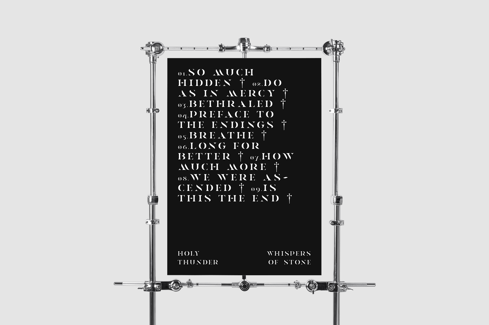
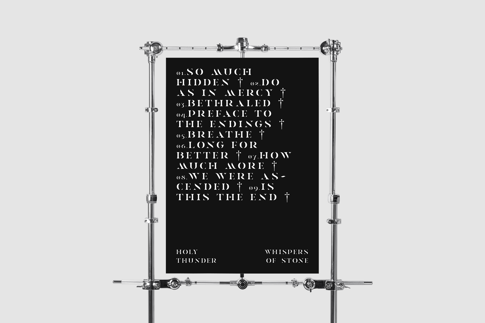
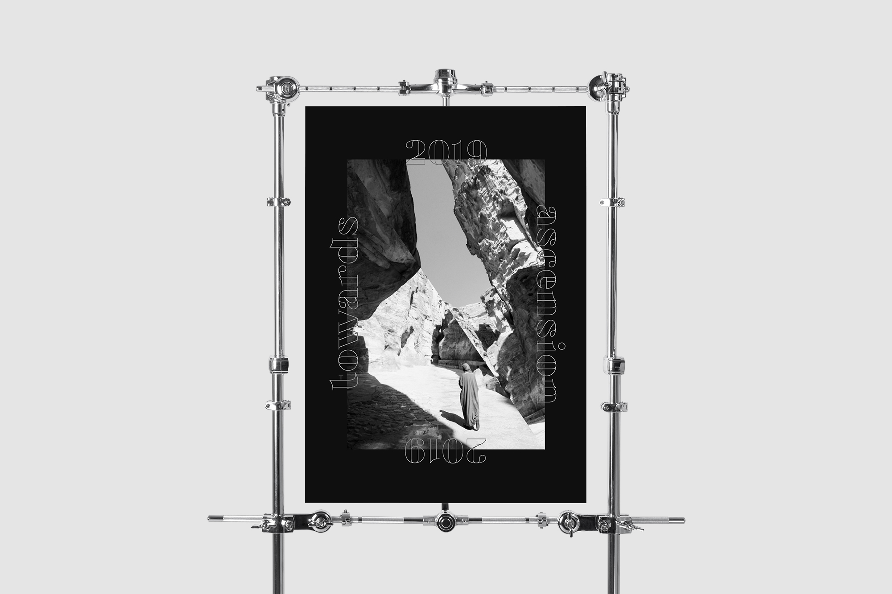
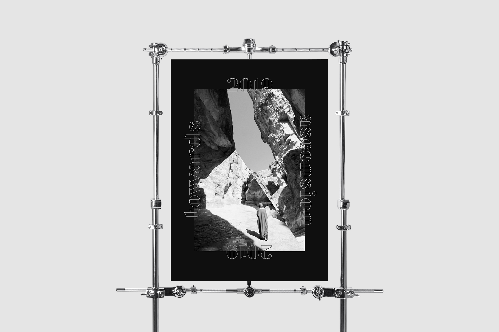
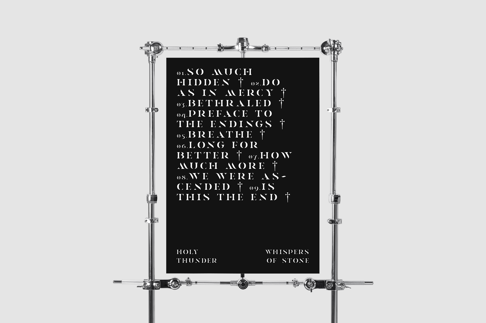
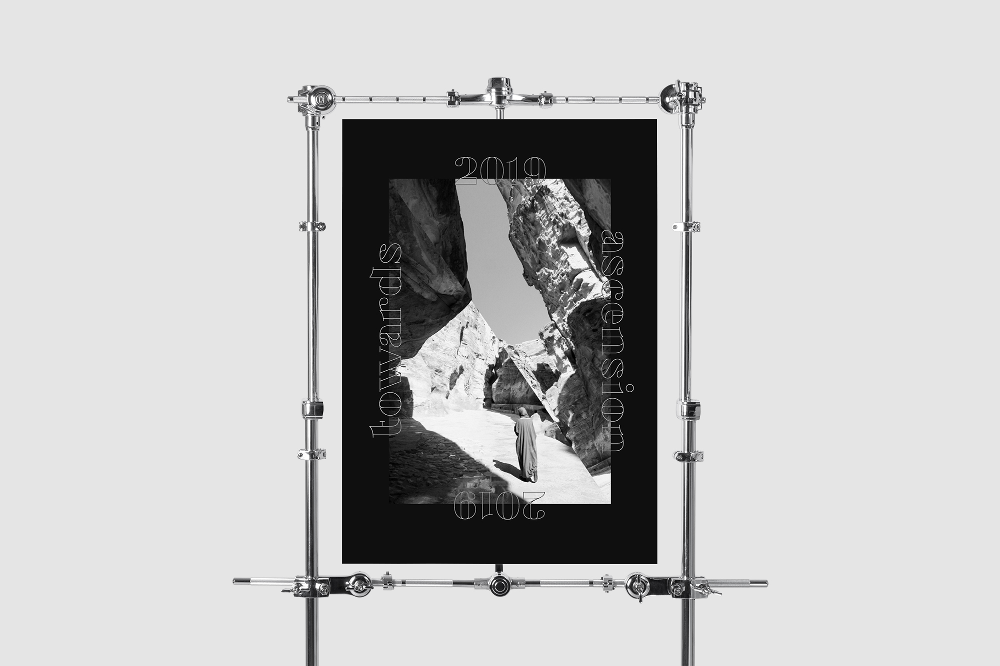

 

En este proyecto me plantee realizar unos ejercicios de diseño más puro, buscando el equilibrio entre elementos sencillos y esquemas monocromos.
Inicialmente, cuando entré en el mundo del diseño, mis primeros trabajos se limitaron a la escalas de blancos y negros, quizá por una falta de educación reglada o por una cuestión más estética y personal.
Después de algún tiempo me dí cuenta que esa obsesión inicial me permitió afianzar los fundamentos de forma, fondo, jerarquía, forma, fondo, y el resto de elementos básicos del diseño.

